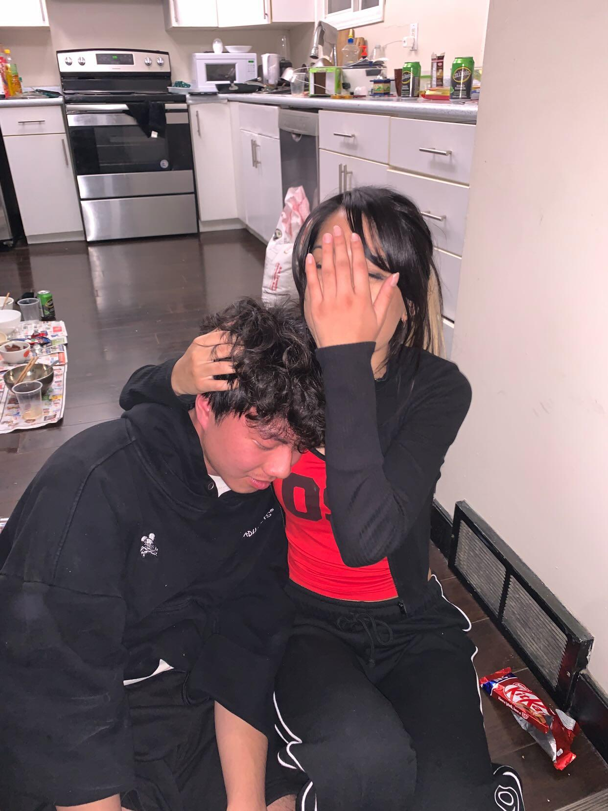

Our first kiss

Da zoo

Just us
To my one and only BunBun🐇❤️
From the day I met you, I knew you were going to hold a special place in my heart. The moment our eyes met for the first time, I could already see our future in your eyes. You have the most beautiful and innocent eyes, clear like a crystal, that come with your beautiful nose, which I think is one of the best features of yours. You will not be able to see what I saw, but your nose is always so shiny (don't ask me why), and it has always been my fav feature on your face that I love to stare at for hours. I love kissing you everywhere on the face, your cheeks are so soft and cold like mochi icecream (might be better), your forehead always feels so smooth to kiss on, and I lost all my soul whenever I kiss your juicy lips (cause you sucked it all), They feel so soft and moist and I feel like our atoms fusing into each other as we kiss. Your body is the part that is drawing me in the most. Your boobies, gosh, do I want to chew them in my mouth all the time (again like mochi), and I wanna see them bounce so so so badly when you're on top of me and you can choke me with your thighs later, you Serena, you have the best legs in the game. You have like the most model body, but you don't even know that. I feel like you are being too insecure for someone that would easily blow every guys away just from the way you smile (no makeup). Don't even get me started with your hair. It's so soft, its smell soooo nice, and I just want to sniff it and play with it. Hear me out, I prefer your straight over your wavy hair cause its so soft to play with. I do think your curly hair is beautiful too, but it's no fun to play with. Oh my Serena, there's so much about you that I can talk about that I cannot fit all in 1 letter. This National Girlfriend Day, I will show you how much I love your beautiful body. I love you so much, I can't wait to have sex again with you. I love you, MWAH. Here are my top 3 memories with you.
I hope you love it, and I love you.
